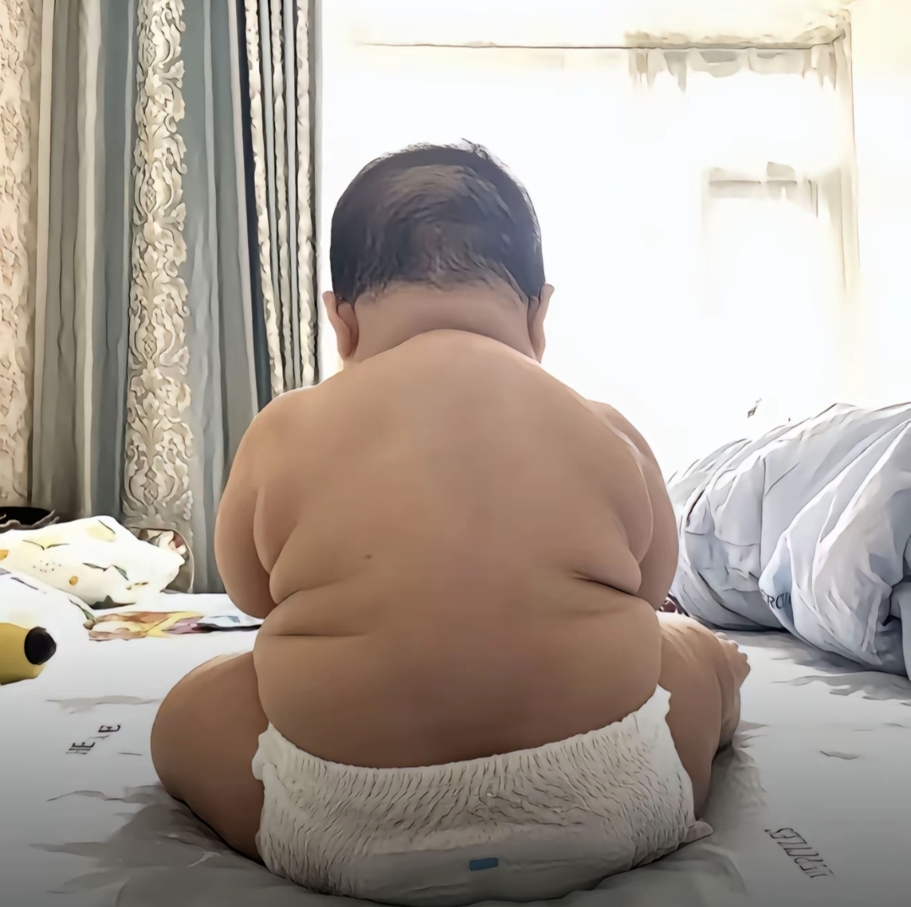

据说在太空里唯二能看到的两个东西，一个是中国长城，另一个就是这个缝隙
不错，这缝隙要比东非大裂谷要小。
零公差吗？有点意思
真正的“零公差”

你是八级钳工我🦌
0公差，我只佩服苏打饼干
去搜一下 北京精雕，那个才算0公差
这里面的那一点点缝隙都能开一家蜜雪冰城了。
给人整成东皇太一了
《你们要钱的吗？》
姐姐：要钱不（我被薅怕了[尬笑]）
我开跑车过来，给我唱个好不[比心][捂脸]
姐姐：这个节目要钱吗[憨笑]
我是这女的，我在等人，走不开，而且我真的以为要钱的，成都很多这种的，谁再骂我我要哭了！[流泪]
TFboys长这么大了吗[黑脸]
不玩高渐离了 开始练蒙恬了吗[捂脸]
感觉它好像临时学了个培训班就急匆匆的来了
咪咪：流程啥来着?哦对，先打招呼，先打招呼，躺下?先摸头还是先滚?不管了，一起上吧。再叫两声，赶紧心软吧。你天龙一霸的老大要丢脸丢尽了。求你[逞强落泪]
这个撒娇好硬核[泪奔]看来平时在外面都是撵猫揍狗的[泪奔]
长腿欧巴咪[奸笑]
🐱：那个老哥说的撒娇是这样吗？
你们说撒的很强硬啊[黑脸]但我觉得很好啊
呜呜呜这地板那么多石子都滚，咪咪大人你这样真的让人好想哭
感觉看到别的猫撒娇还好 看到狸花猫撒娇就感觉它好可怜 这种猫不是很独立的吗 它是不是过的太惨了[流泪]
感觉像身上有个早[黑脸]
人你快看咪都翻肚皮了还不带咪走吗
原来这样是撒娇[黑脸]今天下班回家门口有一只小黑猫跟着我做这样的动作但不跟我进电梯我就走了[黑脸]
撒娇的好生硬
趁我还鲜活，不许任何人熄灭我
看得我热泪盈眶，明天就让我老爸送外卖去[泣不成声][泣不成声]
这个裤子，集:丝袜，渔网袜，健美裤，运动裤，瑜伽裤于一体[捂脸]真是个好物件
小孩：作文题目《胃大的父亲》 老师：写错别字了，是伟大 小孩：请看vcr
带娃一个月 孩子瘦5斤 自己胖10斤[微笑]
垃圾桶：榜一大哥来了啊[看]
黛玉身体孱弱又是独女 以她老爸和皇帝的交情 她本人的才情一定上入宫为妃或嫁给太子人选 潇湘妃子已经暗示了她身份的尊贵 哪里论得上宝玉
那不是走了，那是去前面调头去了
小水獭：妈妈等等我这里是直行道，掉头要去前面，等我调头[捂脸][捂脸]
我可以不吃，但觉得不能让我的朋友吃[送心]
水獭：双倍给下一个[看]
千万不要惹鼬类，这种生物能猎杀大于自己几倍的动物，之前就记得有一只杀了日本一家人，好像叫什么宇智波鼬
懂行的在医院门口就哭了
全家不沾，刷到就是躲掉[玫瑰]
看到那一瞬我心里咯噔一下🙁
哈哈哈哈 惊起一滩夹子[惊喜][惊喜]
萌兰：谁在后面蛐蛐我？ [抠鼻]
我大么么可太聪明了，都知道说的哪只耳朵[捂脸]
宝宝能听懂人类语言实锤[大笑][大笑][大笑]
[流泪][流泪]
也算是走的体面 寿衣都穿上了
很悲伤，但是你这个配乐[流泪][流泪]
本来是个悲伤的故事，看到最后那三个蚕豆我没忍住[捂脸][捂脸][捂脸]
老表啊！你不是说你在那边过的很好吗[流泪]
这个单薄的小背给人一种省吃俭用过度劳累而死[流泪]
过两天会不会这样[捂脸]
那些说切回农村频道的国外ip不就是想让人顺嘴夸两句吗[憨笑][比心]
有钱人家的孩子真的一眼就能看得出来[愉快][比心]
为什么这么标准的abc面容
上海惠灵顿外籍人员子女学校[看]
为什么有钱人家的孩子长得都这么大方
国外ip说转回什么什么频道的和有病一样[黑脸]
有钱人好像都没有刘海[流泪]
Oops sorry, it’s “Sofia the First” [爱心][比心]
公主，裙子是什么牌子，给我女儿整一套
喷不了，这是真公主[憨笑]
小姑娘长得好端庄我的天。看到没人家高端的人看的都是一些迪士尼的动画片。我妹在那天天刷乱七八糟的短视频，想让他戒掉都不戒。[微笑]
我小时候的梦想就是希望自己能像索菲亚一样，，自信快乐
@绥昭 受不了这种人的家境，肯定优越的没边[泣不成声]
老师，我们家子涵不能出汗，一出汗就容易感冒
园长能办这样的活动已经打败了全国99%的校长
老爸上班的路上：
你就说说就这出哪个老爷们能出得了这门。[捂脸][捂脸]
儿子哭，老爸:我就走了能咋滴？
咋了，是不是也想出门，看着还可怜啊[捂脸][捂脸][捂脸]
[黑脸]小时候这样撒娇不让爸妈去上班，结果我妈换夜班真不去了，害得我好几天不能去他们房间玩4399
本人因帮男说话被一秒猜出性别 又因帮女说话被一秒猜出性别 目前处于男女性别叠加态
我小时候我爸开车假装撞我 我一边哭一边跑 他就搁那追[憨笑][憨笑][抱拳][抱拳][抱拳]
女孩纸生气你抱她都会挣脱哈哈，骨子里的基因被激活了
哇
太可爱啦！！！等我小了我也要这么撒娇
谁能相信这宽厚雄壮的背影居然是我8个月的女儿[灵机一动] 
生育率低了 女蜗就有时间精心捏哈[黑脸]
我很小的时候 我爸上班前我必须亲他的额头左脸右脸鼻子下巴[捂脸] 然后有次起来要迟到了他直接飞奔出门了 独留我在楼梯口痛哭流涕撕心裂肺“爸爸还没亲……”[流泪]
我的天呢这个小宝宝天生美人胚子 不敢想象长大了有多好看
儿子做这一套，我只会一脚让他滚远点[泪奔]
大哥够意思了，没说祭日就不错了[捂脸]
Read more: